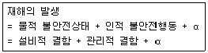
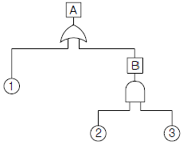
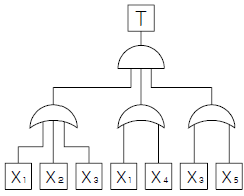
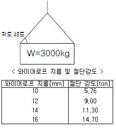
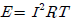
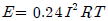
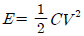
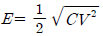
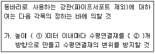
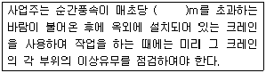

산업안전기사 (2010-09-05 기출문제)
1과목: 안전관리론
1. 다음의 산업안전보건법상 사업 내 안전ㆍ보건 교육의 교육대상별 교육내용에 있어 관리감독자 정기 안전ㆍ보건교육에 해당하는 것은?
- 산업보건 및 직업병 예방에 관한 사항
- 건강증진 및 질병 예방에 관한 사항
- 작업 개시 전 점검에 관한 사항
- 사고 발생시 긴급조치에 관한 사항
(정답률: 61%)

2. 다음 중 집단의 기능에 관한 설명으로 틀린 것은?
- 집단의 규범은 변화하기 어려운 것으로 불변적이다
- 집단 내에 머물도록 하는 내부의 힘을 응집력이라 한다.
- 규범은 집단을 유지하고 집단의 목표를 달성하기 위해 만들어진 것이다.
- 집단이 하나의 집단으로서의 역할을 다하기 위해서는 집단 목표가 있어야 한다.
(정답률: 89%)
3. A 사업장에서는 450명 근로자가 1주일에 40시간씩, 연간 50주를 작업하는 동안에 18건의 재해가 발생하여 20명의 재해자가 발생하였다. 이 근로시간 중에 근로자의 6%가 결근하였다면 이 사업장의 도수율은 약 얼마인가?
- 20.00
- 21.28
- 23.64
- 44.44
(정답률: 63%)
4. 하인리히의 재해발생 이론은 다음과 같이 표현할 수 있다. 이 때 가 의미하는 것으로 가장 적절한 것은?

- 노출된 위험의 상태
- 재해의 직접원인
- 재해의 간접원인
- 잠재된 위험의 상태
(정답률: 79%)
5. 다음 중 Line형 안전관리 조직의 특징으로 옳은 것은?
- 경영자의 자문역할을 한다.
- 안전에 대한 기술의 축적이 용이하다.
- 안전에 관한 지시나 조치가 신속하고 철저하다.
- 안전에 관한 응급조치, 통제수단이 복잡하다.
(정답률: 83%)
6. 학습이론 중 자극과 반응의 이론이라 볼 수 없는 것은?
- Kohler의 통찰성(Insight Theory)
- Thorndike의 시행착오설(Trial and Error Theory)
- Pavlov의 조건반사설(Classical Conditioning Theory)
- Skinner의 조작적 조건화설(Operant Conditioning Theory)
(정답률: 67%)
7. 다음 중 안전교육훈련 지도방법의 4단계를 올바르게 나열한 것은?
- 도입 → 제시 → 적용 → 확인
- 도입 → 적용 → 제시 → 확인
- 제시 → 도입 → 확인 → 적용
- 제시 → 적용 → 확인 → 도입
(정답률: 82%)
8. 토의식 교육방법 중 새로운 교재를 제시하고 거기에서의 문제점을 피교육자로 하여금 제기하게 하거나, 의견을 여러가지 방법으로 발표하게 하고, 다시 깊이 파고들어서 토의하는 방법은?
- 포럼(Forum)
- 심포지엄(Symposium)
- 패널 디스커션(Panel discussion)
- 버즈세션(Buzz session)
(정답률: 80%)
9. 사용장소에 따른 방진마스크의 등급을 구분할 때 석면 취급장소에 가장 적합한 등급은?
- 특급
- 1급
- 2급
- 3급
(정답률: 80%)
10. 기계나 기구 또는 설비를 신설 및 변경하거나 고장에 의한 수리 등을 할 경우에 행하는 부정기적 점검을 말하며, 일정 규모 이상의 강풍ㆍ폭우ㆍ지진 등의 기상이변이 있는 후에도 실시하는 점검을 무엇이라 하는가?
- 일상점검
- 정기점검
- 특별점검
- 수시점검
(정답률: 87%)
11. 작업현장에서 그 때 그 장소의 상황에 즉시 즉응하여 실시하는 위험예지활동을 무엇이라고 하는가?
- 시나리오 역할연기훈련
- 자문자답 위험예지훈련
- TBM 위험예지훈련
- 1인 위험예지훈련
(정답률: 77%)
12. 다음 중 재해예방의 4원칙에 관한 설명으로 틀린 것은?
- 재해의 발생에는 반드시 원인이 존재한다.
- 재해의 발생과 손실의 발생은 우연적이다.
- 재해예방을 위한 가능한 안전대책은 반드시 존재 한다.
- 재해는 원인 제거가 불가능하므로 예방만이 최우선이다.
(정답률: 86%)
13. 안전교육 중 제2단계로 시행되며 같은 것을 반복해서 개인의 시행착오에 의해서만 점차 그 사람에게 형성되는 교육은?
- 안전기술교육
- 안전지식교육
- 안전기능교육
- 안전훈련교육
(정답률: 78%)
14. 다음 중 주의의 수준이 Phase 0 인 상태에서의 의식 상태로 옳은 것은?
- 무의식 상태
- 의식의 이완상태
- 명료한 상태
- 과긴장상태
(정답률: 88%)
15. 다음 중 재해발생시 긴급처리의 조치순서로 가장 적절한 것은?
- 기계정지 - 현장보존 - 피해자 구조 - 관계자통보
- 현장보존 - 관계자통보 - 기계정지 - 피해자 구조
- 피해자 구조 - 현장보존 - 기계정지 - 관계자통보
- 기계정지 - 피해자 구조 - 관계자통보 - 현장보존
(정답률: 86%)
16. 다음 중 하인리히의 재해손실비 계산에 있어 간접손실비 항목에 속하지 않는 것은?
- 부상자의 시간 손실
- 기계, 공구, 재료 그 밖의 재산 손실
- 근로자외 제3자에게 신체적 상해를 입혔을 때의 손실
- 관리감독자가 재해의 원인조사를 하는데 따른 시간손실
(정답률: 50%)
17. 다음 중 맥그리거(Douglas McGregor)의 X이론과 Y이론에 관리 처방으로 가장 적절한 것은?
- 목표에 의한 관리는 Y이론의 관리 처방에 해당된다.
- 직무의 확장은 X이론의 관리 처방에 해당된다.
- 상부책임제도의 강화는 Y이론의 관리 처방에 해당된다.
- 분권화 및 권한의 위임은 X이론의 관리처방에 해당된다.
(정답률: 66%)
18. 바이오리듬(Biorhytm) 가운데 상상력, 판단력, 추리능력과 가장 관계가 깊은 생체 리듬의 종류는?
- 지성적 리듬
- 감성적 리듬
- 육체적 리듬
- 생활 리듬
(정답률: 69%)
19. 산업안전보건법에 따른 안전ㆍ보건표지의 제작에 있어 안전ㆍ보건표지 속의 그림 또는 부호의 크기는 안전ㆍ보건 표지의 크기와 비례하여야 하며, 안전ㆍ보건표지 전체 규격의 몇 % 이상이 되어야 하는가?
- 20%
- 30%
- 40%
- 50%
(정답률: 70%)
20. 산업안전보건법상 사업장에서 보존하는 서류 중 2년간보존해야 하는 서류에 해당하는 것은? (단, 고용노동부장관이 필요하다고 인정하는 경우는 제외한다.)
- 건강진단에 관한 서류
- 노사협의체의 회의록
- 작업환경측정에 관한 서류
- 안전관리자, 보건관리자의 선임에 관한 서류
(정답률: 53%)
2과목: 인간공학 및 시스템안전공학
21. 다음 중 인간공학 연구조사에 사용되는 기준의 구비조건과 가장 거리가 먼 것은?
- 적절성
- 무오염성
- 부호성
- 기준 척도의 신뢰성
(정답률: 72%)
22. 청각적 표시장치의 설계시 적용하는 일반 원리의 설명으로 틀린 것은?
- 양립성이란 긴급용 신호일 때는 낮은 주파수를 사용하는 것을 의미한다.
- 근사성이란 복잡한 정보를 나타내고자 할 때 2단계의 신호를 고려하는 것을 말한다.
- 분리성이란 두 가지 이상의 채널을 듣고 있다면 각 채널의 주파수가 분리되어 있어야 한다는 의미이다.
- 검약성이란 조작자에 대한 입력신호는 꼭 필요한 정보만을 제공하는 것이다.
(정답률: 59%)
23. 다음 중 암호체계의 사용상 일반적 지침과 가장 거리가 먼 것은?
- 검출성(detectability)
- 식별성(discriminability)
- 안전성(safety)
- 양립성(compatibility)
(정답률: 57%)
24. 원자력 산업과 같이 상당한 안전이 확보되어 있는 장소에서 추가적인 고도의 안전 달성을 목적으로 하고 있으며, 관리, 설계, 생산, 보전 등 광범위한 안전을 도모하기 위하여 개발된 분석기법은?
- MORT(Management Oversight And Risk Tree)
- DT(Decision Tree)
- ETA(Event Tree Analysis)
- FTA(Fault Tree Analysis)
(정답률: 76%)
25. 인간-기계 시스템(Man-Machine System)에서 인간공학적 설계상의 문제로 발생하는 인간 실수의 원인이 아닌 것은?
- 서로 식별하기 어려운 표시장치와 조종장치
- 인체에 무리하거나 부자연스러운 지시
- 의미를 알기 어려운 신호형태
- 작업의 흐름에 따른 배치
(정답률: 71%)
26. 다음 중 인간이 기계보다 우수한 기능으로 가장 거리가 먼 것은?
- 수신 상태가 나쁜 음극선관에 나타나는 영상과 같이 배경 잡음이 심한 경우에도 신호를 인지할 수 있다.
- 항공 사진의 피사체나 말소리처럼 상황에 따라 변화하는 복잡한 자극의 형태를 식별할 수 있다.
- 암호화된 정보를 신속하게 대량으로 보관할 수 있다.
- 관찰을 통해서 일반화하여 귀납적으로 추리한다.
(정답률: 76%)
27. 프레스에 설치된 안전장치의 수명은 지수분포를 따르며 평균수명은 100시간이다. 새로 구입한 안전장치가 50시간동안 고장 없이 작동할 확률(A)과 이미 100시간을 사용한 안전장치가 앞으로 100시간 이상 견딜 확률(B)은 얼마인가?
- A : 0.606, B : 0.368
- A : 0.606, B : 0.606
- A : 0.368, B : 0.606
- A : 0.368, B : 0.368
(정답률: 58%)
28. 다음 중 습구온도와 건구온도의 단순가중치를 나타내는 것은?
- 실효온도(ET)
- Oxford 지수
- WBGT 지수
- 열압박지수(heat stress index)
(정답률: 70%)
29. 다음 중 인간-기계 통합체계의 유형에서 수동체계에 해당하는 것은?
- 자동차
- 컴퓨터
- 공작기계
- 장인과 공구
(정답률: 85%)
30. 화학설비에 대한 안전성 평가에서 정량적 평가 항목에 해당하지 않는 것은?
- 보전
- 조작
- 취급물질
- 화학설비용량
(정답률: 62%)
31. FMEA에서 고장의 발생확률을 β 라 하고, β의 값이 0 < β < 0.10 일 때 고장의 영향은 어떻게 분류되는가?
- 영향 없음
- 가능한 손실
- 예상되는 손실
- 실제의 손실
(정답률: 50%)
32. 근골격계질환의 유해요인 조사방법 중 인간공학적 평가기법이 아닌 것은?
- OWAS
- NASA-TLX
- NLE
- RULA
(정답률: 58%)
33. 종이의 반사율이 70% 이고 인쇄된 글자의 반사율이 10% 이라면 대비(luminance contrast)는 약 얼마인가?
- 85.7%
- 89.5%
- 95.3%
- 99.1%
(정답률: 49%)
34. 다음과 같은 FT도에 있어 A의 사상이 발생할 수 있는 확률은? (단, 사상 ①, ②, ③ 의 발생확률은 각각 0.1, 0.2, 0.15 이다.)

- 1.27 × 10-1
- 3.5 × 10-1
- 3.25 × 10-1
- 7.3 × 10-2
(정답률: 60%)
35. 다음 중 설비의 열화를 방지하고 그 진행을 지연시켜 수명을 연장하기 위한 설비의 점검, 청소, 주유 및 교체 등의 활동을 뜻하는 보전은?
- 예방보전
- 일상보전
- 개량보전
- 사후보전
(정답률: 53%)
36. 결함수분석의 기호 중 입력사상이 어느 하나라도 발생 할 경우 출력사상이 발생하는 것은?
- NOR GATE
- AND GATE
- OR GATE
- NAND GATE
(정답률: 76%)
37. 상완을 자연스럽게 수직으로 늘어뜨린 상태에서 전완만을 편하게 뻗어 파악할 수 있는 영역을 무엇이라 하는가?
- 정상작업파악한계
- 정상작업역
- 최대작업역
- 작업공간포락면
(정답률: 64%)
38. [그림]과 같이 FAT로 분석된 시스템에서 현재 모든 기본사상에 대한 부품이 고장난 상태이다. 부품 X1 부터 부품 X5 까지 순서대로 복구한다면 어느 부품을 수리 완료하는 순간부터 시스템은 정상가동이 되겠는가?

- 부품X2
- 부품X3
- 부품X4
- 부품X5
(정답률: 76%)
39. 기계설비의 안전성 평가시 본질적인 안전을 진전시키기 위하여 조치해야 할 사항과 거리가 먼 것은?
- 재해를 분석하여 인적 또는 물적 원인 중 큰 비중을 차지하는 원인에 대해서만 대책을 실시한다.
- 작업자 측에 실수나 잘못이 있어도 기계설비 측에서 이를 보완하여 안전을 확보한다.
- 작업방법, 작업속도, 작업자세 등을 작업자가 안전하게 작업할 수 있는 상태로 강구한다.
- 기계설비 유압회로나 전기회로에 고장이 발생하거나 정전 등 이상상태 발생시 안전한 방향으로 이행하도록 한다.
(정답률: 79%)
40. 인체에 작용한 스트레스의 영향으로 발생된 신체 반응의 결과인 스트레인(strain)을 측정하는 척도가 잘못 연결된 것은?
- 인지적 활동 : EEG
- 정신 운동적 활동 : EOG
- 국부적 근육 활동 : EMG
- 육체적 동적 활동 : GSR
(정답률: 52%)
3과목: 기계위험방지기술
41. 아세틸렌 용접 시 역화가 일어날 때 가정 먼저 취해야 할 행동은?
- 토치에 아세틸렌 밸브를 닫아야 한다.
- 아세틸렌 밸브를 즉시 잠그고 산소밸브를 잠근다.
- 산소밸브를 즉시 잠그고 아세틸렌 밸브를 잠근다.
- 아세틸렌 사용압력을 1kgf/cm2 이하로 즉시 낮춘다.
(정답률: 73%)
42. 회전하는 연삭숫돌을 사용시 안전조치 내용으로 맞지 않는 것은?
- 작업시작 전 결함유무 확인 후 사용해야 한다.
- 최고사용회전속도의 150%로 시운전하여 이상이 없는지 확인 후 사용한다.
- 연삭숫돌의 측면 사용은 측면용 작업숫돌 이외에는 하여서는 아니된다.
- 연삭 작업시 근로자에게 위험을 미칠 우려가 있는 부위는 해당 부위에 덮개를 설치해야 한다.
(정답률: 79%)
43. 기계설비의 구조적 안전화를 위한 안전조건에 해당되지 않는 것은?
- 재료 선택시의 안전화
- 설계시의 올바른 강도계산
- 사용상의 안전화
- 가공상의 안전화
(정답률: 47%)
44. 다음 중 비파괴 검사가 아닌 것은?
- 방사선 투과 시험
- 초음파 탐상 시험
- 누설시험
- 피로 시험
(정답률: 82%)
45. 크레인의 로프에 질량 100kg 인 물체를 5m/s2 의 가속도로 감아올릴 때 로프에 걸리는 하중은 약 몇 N 인가?
- 500N
- 1480N
- 2540N
- 4900N
(정답률: 55%)
46. 3000kg의 질량을 가진 물체를 45도 각도로 그림과 같이 와이어로프가 직접 들어올릴 때, 안전율이 고려된 가장 적절한 와이어로프 지름을 표에서 구하면? (단, 안전율은 산업안전기준에 관한 규칙을 따른다.)

- 10mm
- 12mm
- 14mm
- 16mm
(정답률: 51%)
47. 롤러의 급정지를 위한 방호장치를 설치하고자 한다. 앞면 롤러 직경이 36cm 이고 분당회전속도는 50rpm 이라면 급정지장치의 정지거리는 최대 몇 cm 이상이어야 하는가?
- 45cm
- 50cm
- 55cm
- 60cm
(정답률: 45%)
48. 보일러에서 압력방출장치가 2개 설치된 경우 최고 사용 압력이 10kgf/cm2 로 할 때 압력방출장치의 설정방법으로 가장 옳은 것은?
- 2개 모두 11kgf/cm2에서 작동되도록 설정하였다.
- 하나는 10kgf/cm2에서 작동되고 나머지는 11kgf/cm2에서 작동되도록 설정하였다.
- 하나는 10kgf/cm2에서 작동되고 나머지는 10.5kgf/cm2에서 작동되도록 설정하였다.
- 2개 모두 12kgf/cm2에서 작동되도록 설정하였다.
(정답률: 73%)
49. 일반적으로 절삭 작업 시 칩이 가장 가늘고 예리 한 것은?
- 셰이퍼
- 밀링
- 선반
- 플레이너
(정답률: 58%)
50. 지게차의 작업상태별 안정도에 관한 내용으로 틀린 것은? (단, V는 최고속도[km/h] 이다.)
- 주행시의 전후 안정도는 18% 이다. (기준무부하상태)
- 하역작업시의 좌우 안정도는 6%이다. (기준무부하상태)
- 하역작업시의 전후안정도는 20% 이다. (기준무부하상태)
- 주행시의 좌우 안정도는 (15+1.1V)% 이다. (기준무부하상태)
(정답률: 67%)
51. 가스 용접 작업시 충전가스 용기의 도색과 가스명이 맞지 않은 것은?
- 산소 - 녹색
- 아르곤 - 회색
- 액화암모니아 - 황색
- 액화염소 - 갈색
(정답률: 64%)
52. 연삭숫돌의 상부를 사용하는 것을 목적으로 하는 탁상용 연삭기의 안전덮개 노출각도로 다음 중 가장 적절한 것은?
- 90° 이내
- 65° 이상
- 60° 이내
- 125° 이내
(정답률: 69%)
53. 프레스에 사용되는 방호장치의 설치방법이 올바르지 않는 것은?
- 수인식에서 수인끈의 끌어당기는 양은 테이블 세로 길이의 1/2 이상이어야 한다.
- 광전자식 방호장치를 사용할 경우 위험한계까지의 거리가 짧은 200mm 이하의 프레스에서는 연속차광폭이 작은 30mm 이상의 방호장치를 선택한다.
- 광전자식 검출기구를 부착한 손쳐내기식 방호장치에서 위험한계에서 광축까지의 거리는 광선을 차단직후 위험한계 내에 도달하기 전에 손쳐내기 봉 기구로 손을 쳐낼수 있도록 안전거리를 확보할 수 있어야 한다.
- 양수조작식 방호장치에서는 누름버튼 등을 양손으로 동시에 조작하지 않으면 슬라이드를 작동시킬 수 없으며 양손에 의한 동시조작은 0.5초 이내에서 작동되는 것으로 한다.
(정답률: 42%)
54. 밀링작업시 안전수칙으로 옳지 않은 것은?
- 테이블 위에 공구나 기타 물건 등을 올려놓지 않는다.
- 제품수치를 측정할 때는 절삭 공구의 회전을 정지한다.
- 강력 절삭을 할 때는 일감을 바이스에 얇게 물린다.
- 상하 좌우 이송장치의 핸들은 사용 후 풀어 둔다.
(정답률: 82%)
55. 기계설계시 사용되는 안전계수를 나타내는 식에 해당하는 것은?
- 항복응력/극한강도
- 허용응력/극한강도
- 극한강도/항복응력
- 극한강도/허용응력
(정답률: 73%)
56. 산업용 로봇 중 교시 프로그래밍을 통해서 입력된 작업 프로그램을 반복해서 실행할 수 있는 로봇은?
- 시퀀스 로봇
- 플레이백 로봇
- 수치제어 로봇
- 지능 로봇
(정답률: 50%)
57. 완전 회전식 클러치 기구가 있는 프레스의 양수기동식 방호장치에서 누름버튼을 누를 때부터 사용하는 프레스의 슬라이드가 하사점에 도달할 때까지의 소요최대 시간이 0.5초 이면 안전거리는 몇 mm 이상이어야 하는가?
- 200mm
- 400mm
- 600mm
- 800mm
(정답률: 51%)
58. 회전축, 기어, 풀리, 플라이 휠 등에는 어떤 고정구를 설치해야 하는가?
- 개방형 고정구
- 돌출형 고정구
- 묻힘형 고정구
- 요철형 고정구
(정답률: 75%)
59. 트롤리 컨베이어, 토우 컨베이어, 에프런 컨베이어가 공통으로 속하는 컨베이어 종류 명칭은?
- 체인 컨베이어
- 벨트 컨베이어
- 롤러 컨베이어
- 유체 컨베이어
(정답률: 45%)
60. 산업용 로봇의 작동범위 내에서 당해 로봇에 대하여 교시 등의 작업시 위험을 방지하기 위하여 수립해야 하는 지침사항에 해당하지 않는 것은?
- 로봇의 구성품의 설계 및 조립방법
- 2인 이상의 근로자에게 작업을 시킬 때의 신호방법
- 로봇의 조작방법 및 순서
- 작업 중의 매니퓰레이터의 속도
(정답률: 72%)
4과목: 전기위험방지기술
61. 지중에 매설된 금속제의 수도관에 접지를 할 수 있는 경우의 접지 저항값은?
- 1Ω 이하
- 2Ω 이하
- 3Ω 이하
- 4Ω 이하
(정답률: 42%)
62. 화재폭발 위험분위기의 생성방지와 관련이 적은 것은?
- 폭발성 가스의 누설
- 인화성 가스의 방출
- 폭발성 가스의 체류
- 폭발성 가스의 옥외 확산
(정답률: 62%)
63. 교류아크 용접기의 자동전격방지 장치는 무부하 시의 2차측 전압을 저전압으로 1.5초안에 낮추어 작업자의 감전 위험을 방지하는 자동 전기적 방호장치이다. 피용접재에 접속되는 접지공사와 자동전격방지장치의 주요 구성품은?(관련 규정 개정전 문제로 여기서는 기존 정답인 4번을 누르면 정답 처리됩니다. 자세한 내용은 해설을 참고하세요.)
- 1종 접지공사와 변류기, 절연변압기, 제어장치, 전압계
- 2종 접지공사와 절연변압기, 제어장치, 변류기, 전류계
- 3종 접지공사와 보조변압기, 주회로 변압기, 전압계
- 3종 접지공사와 보조변압기, 주회로 변압기, 제어장치
(정답률: 54%)
64. 전기기기의 Y종 절연물의 최고 허용온도는?
- 80℃
- 85℃
- 90℃
- 1⑤℃
(정답률: 56%)
65. 사용전압이 380V 인 전동기 전로의 절연저항 최소값은 몇 [MΩ] 인가?(관련 규정 개정전 문제로 여기서는 기존 정답인 2번을 누르면 정답 처리됩니다. 자세한 내용은 해설을 참고하세요.)
- 0.4
- 0.3
- 0.2
- 0.1
(정답률: 68%)
66. 다음 중 이상적인 피뢰기의 성능이 아닌 것은?
- 방전개시전압이 낮을 것
- 제한전압이 낮을 것
- 속류 차단을 확실히 할 것
- 뇌전류 방전능력이 작을 것
(정답률: 73%)
67. 정전기 방전에 의한 화재 및 폭발 발생에 대한 설명 중 적합하지 않은 것은?
- 정전기 방전에너지가 어떤 물질의 최소착화에너지보다 크게 되면 화재, 폭발이 일어날 수 있다.
- 부도체가 대전되었을 경우에는 정전에너지보다는 대전위의 크기에 의해서 화재, 폭발이 결정된다.
- 대전된 물체에 인체가 접근했을 때 전격을 느낄 정도이면 화재, 폭발의 가능성이 있다.
- 작업복에 대전된 정전에너지가 인화성 물질의 최소착화에너지보다 클 때는 화재, 폭발의 위험성이 있다.
(정답률: 41%)
68. 고압충전전선로 작업시 가죽장갑과 고무장갑의 안전한 사용법은?
- 가죽장갑만 사용한다.
- 고무장갑만 사용한다.
- 가죽장갑의 바깥쪽에 고무장갑을 착용한다.
- 고무장갑의 바깥쪽에 가죽장갑을 착용한다.
(정답률: 54%)
69. 한국산업규격 KS C 4613 주택용 누전차단기의 규정에서 언급된 고속형 누전 차단기란 다음 중 어느 것인가?
- 정격감도 전류에서 동작시간이 0.1초 이내
- 정격감도 전류의 1.4배에서 동작시간이 0.⑤초 이내
- 정격감도 전류에서 동작시간이 0.2초를 초과하고 1초 이내
- 정격감도 전류에서 동작시간이 0.1초를 초과하고 2초 이내
(정답률: 56%)
70. 가스폭발 위험장소 중 1종 장소의 방폭구조 전기기계ㆍ기구의 선정기준에 속하지 않는 것은?
- 내압방폭구조
- 압력방폭구조
- 유입방폭구조
- 비점화방폭구조
(정답률: 71%)
71. 폭발성 가스의 폭발등급 중 1등급 가스가 아닌 것은?
- 암모니아
- 일산화탄소
- 수소
- 메탄
(정답률: 47%)
72. 다음 중 전동기를 운전하고자 할 때 개폐기의 조작순서가 맞는 것은?
- 메인 스위치 → 분전반 스위치 → 전동기용 개폐기
- 분전반 스위치 → 메인 스위치 → 전동기용 개폐기
- 전동기용 개폐기 → 분전반 스위치 → 메인 스위치
- 분전반 스위치 → 전동기용 스위치 → 메인 스위치
(정답률: 62%)
73. 가공전선 또는 충전전로에 접근하는 장소에서 시설물의 건설 해체 등의 작업을 함에 있어서 작업자가 감전의 위험이 발생할 우려가 있는 경우에 감전방지 대책으로 적절하지 않은 것은?
- 해당 충전전로를 이설한다.
- 감전의 위험을 방지하기 위하여 방책을 설치한다.
- 해당 충전전로에 절연용 보호구를 설치한다.
- 감시인을 두고 작업을 감시하도록 한다.
(정답률: 38%)
74. 전기설비 화재의 경과별 재해 중 가장 빈도가 높은 것은?
- 단락
- 누전
- 접촉부 과열
- 과부하
(정답률: 62%)
75. 폭발한계에 도달한 메탄가스가 공기에 혼합되었을 경우 착화한계전압은 약 몇 [V] 인가? (단, 메탄의 착화최소에너지는 0.2mJ, 극간 용량은 10pF 으로 한다.)
- 6325V
- 5225V
- 4135V
- 3035V
(정답률: 45%)
76. 금속관의 방폭형 부속품에 관한 설명 중 틀린 것은?
- 아연도금을 한 위에 투명한 도료를 칠하거나 녹스는 것을 방지한 강도는 가단주철일 것
- 안쪽면 및 끝부분은 전선의 피복을 손상하지 않도록 매끈한 것일 것
- 전선관과의 접속부분의 나사는 5턱 이상 완전히 나사결합이 될 수 있는 길이일 것
- 접합면은 유입방폭구조의 폭발압력시험에 적합할 것
(정답률: 52%)
77. 인체의 피부저항은 어떤 조건에 따라 달라지는데 다음 중 달라지는 제반조건에 해당되지 않은 것은?
- 습기에 의한 변화
- 피부와 전극의 간격에 의한 변화
- 인가전압에 따른 변화
- 인가시간에 의한 변화
(정답률: 34%)
78. 상용주파수 60[Hz] 교류에서 성인 남자의 경우 고통 한계 전류 [mA]로 가장 알맞은 것은?
- 1mA
- 3~4mA
- 7~8mA
- 15~20mA
(정답률: 67%)
79. 전격에 의해 심실세동이 일어날 확률이 가장 큰 심장박동 주기에 대한 설명으로 가장 옳은 것은?
- 심실의 수축에 따른 파형이다.
- 심실의 수축 종료 후 심실의 휴식시 발생하는 파형이다.
- 심실의 수축 시작 후 심실의 휴식시 발생하는 파형이다.
- 심실의 팽창에 따른 파형이다.
(정답률: 71%)
80. 절연성이 높은 유전성 액체를 다룰 때 정전기 재해의 방지 대책으로 옳지 않은 것은?
- 가스용기, 탱크로리 등의 도체부는 접지한다.
- 도전화를 착용하여 접지한 것과 같은 효과를 갖도록 한다.
- 유동대전이 심하지 않은 도전성 위험물의 배관 유속은 매초 7m 이상으로 한다.
- 탱크의 주입구는 위험물이 수평방향으로 유입하도록 한다.
(정답률: 67%)
5과목: 화학설비위험방지기술
81. 다음 중 산업안전보건법상 물질안전보건자료의 작성ㆍ배치 제외 대상이 아닌 것은?
- 원자력법에 의한 방사성 물질
- 농약관리법에 의한 농약
- 비료관리법에 의한 비료
- 관세법에 의해 수입되는 유기용제
(정답률: 69%)
82. 화학설비 가운데 분체화학물질 분리장치에 해당하지 않는 것은?
- 건조기
- 분쇄기
- 유동탑
- 결정조
(정답률: 51%)
83. 다음 중 전기설비에 의한 화재 발생시 적절하지 않은 소화기는?
- 포소화기
- 무상수(羽狀水)소화기
- 이산화탄소소화기
- 할로겐화합물소화기
(정답률: 50%)
84. 다음 중 열교환기의 보수에 있어서 일상점검항목으로 볼 수 없는 것은?
- 보온재 및 보냉재의 파손상황
- 부식의 형태 및 정도
- 도장의 노후 상황
- flange부 등의 외부 누출여부
(정답률: 40%)
85. 다음 중 제3류 위험물에 해당하지 않는 것은?
- 나트륨
- 알킬알루미늄
- 황린
- 니트로글리세린
(정답률: 66%)
86. 공기 중에서 A 물질의 폭발하한계가 4.0vol%, 상한계가 75.0vol% 라면 이 물질의 위험도는 얼마인가?
- 16.75
- 17.75
- 18.75
- 19.75
(정답률: 67%)
87. 에틸에테르와 에틸알콜이 3:1로 혼합증기의 몰비가 각각 0.75, 0.25 이고 에틸에테르와 에틸알콜의 폭발하한값이 각각 1.9vol%, 4.3vol%일 때 혼합가스의 폭발하한값은 약 몇 vol% 인가?
- 2.2
- 3.47
- 22
- 34.7
(정답률: 58%)
88. 다음 중 물질의 누출방지용으로서 접합면을 상호 밀착 시키기 위하여 사용하는 것은?
- 개스킷
- 체크밸브
- 플러그
- 콕크
(정답률: 69%)
89. 열분해를 일으키기 쉬운 불안정한 물질로서 열분해로 발생한 휘발분이 점화되지 않을 경우 다량의 발연을 수반하는 연소를 무엇이라 하는가?
- 분해연소
- 확산연소
- 그을음연소
- 자기연소
(정답률: 49%)
90. 다음 중 폭발방지에 관한 설명으로 적절하지 않은 것은?
- 폭발성 분진은 퇴적되지 않도록 항상 공기 중에 분산시켜 주어야 한다.
- 압력이 높을수록 인화성 물질의 발화지연이 짧아진다.
- 가스 누설 우려가 있는 장소에서는 점화원의 철저한 관리가 필요하다.
- 도전성이 낮은 액체는 접지를 통한 정전기 방전 조치를 취한다.
(정답률: 57%)
91. 연소가 지속되기 위한 연쇄반응을 차단하여 소화하는 방법을 무엇이라 하는가?
- 냉각소화
- 질식소화
- 제거소화
- 억제소화
(정답률: 54%)
92. 공기 중 아세톤의 농도가 200ppm(TVL500ppm), 메틸에틸케론(MEK)의 농도가 100ppm(TVL 200ppm)일 때 혼합물질의 허용농도는 약 몇 ppm 인가? (단, 두 물질은 서로 상가작용을 하는 것으로 가정한다.)
- 150
- 200
- 270
- 333
(정답률: 53%)
93. 다음 중 산업안전보건법상 위험물의 정의로 틀린 것은?
- 폭발성 물질 : 가열ㆍ마찰ㆍ충격 또는 다른 화학 물질과의 접촉 등으로 인하여 산소나 산화제의 공급이 없더라도 폭발 등 격렬한 반응을 일으킬 수 있는 고체나 액체
- 인화성 액체 : 대기압 하에서 인화점이 60℃ 이하인 인화성 액체
- 인화성 가스 : 폭발한계농도의 하한이 5% 이하 또는 상하한의 차가 10% 이상인 가스
- 물반응성 물질 : 스스로 발화하거나 물과 접촉하여 발화하는 등 발화가 용이하고 인화성 가스가 발생할 수 있는 물질
(정답률: 51%)
94. 다음 중 화재 예방에 있어 화재의 확대방지를 위한 방법으로 적절하지 않은 것은?
- 가연물량의 제한
- 난연화 및 불연화
- 화재의 조기발견 및 초기소화
- 공간의 통합과 대형화
(정답률: 76%)
95. 다음 중 흡입시 인체에 구내염과 혈뇨, 손 떨림 등의 증상을 일으키며 신경계가 대표적인 표적기관인 물질은?
- 크롬
- 석회석
- 이산화탄소
- 수은
(정답률: 76%)
96. 다음 중 파열판에 관한 설명으로 틀린 것은?
- 압력 방출속도가 빠르며, 분출량이 많다.
- 설정 파열압력 이하에서 파열될 수 있다.
- 한번 부착한 후에는 교환할 필요가 없다.
- 높은 점성의 슬러리나 부식성 유체에 적용할 수 있다.
(정답률: 76%)
97. 다음 중 분진이 발화 폭발하기 위한 조건이 아닌 것은?
- 불연성
- 미분 상태
- 점화원의 존재
- 지연성가스 중에서의 교반과 운동
(정답률: 74%)
98. 단위공정시설 및 설비로부터 다른 단위공정 시설 및 설비 사이의 안전거리는 설비의 외면으로부터 얼마 이상이 되어야 하는가?
- 5m
- 10m
- 15m
- 20m
(정답률: 67%)
99. 다음 중 자연발화의 방지법으로 적절하지 않은 것은?
- 통풍을 잘 시킬 것
- 습도가 낮은 곳을 피할 것
- 저장실의 온도 상승을 피할 것
- 공기가 접촉되지 않도록 불활성액체 등에 저장할 것
(정답률: 62%)
100. 다음 중 최소발화에너지(E.[J])를 구하는 식으로 옳은것은? (단, I는 전류[A], R은 저항[Ω], V는 전압[V], C는 콘덴서용량[F], T는 시간[초]이라 한다.)




(정답률: 78%)
6과목: 건설안전기술
101. 거푸집동바리 등을 조립하는 때의 준수사항 중 다음 ( )안에 알맞은 숫자는?

- ① : 1 ② : 1
- ① : 1 ② : 2
- ① : 2 ② : 1
- ① : 2 ② : 2
(정답률: 61%)
102. 굴착면의 기울기 기준으로 옳지 않은 것은?(2021년 11월 19일 변경된 규정 적용 됨)
- 경암 - 1:0.5
- 연암 - 1:1.0
- 습지 - 1:1
- 건지 - 1:1.5
(정답률: 53%)
103. 다음 중 고정식 크레인이 아닌 것은?
- 천장크레인
- 크롤러 크레인
- 지브 크레인
- 타워크레인
(정답률: 60%)
104. 다음 중 높이 2m 이상인 높은 작업장소의 개구부에서 추락을 방지하기 위한 것이 아닌 것은?
- 보호난간
- 안전대
- 방호선반
- 방망
(정답률: 63%)
1⑤. 취급ㆍ운반의 원칙으로 옳지 않은 것은?
- 연속운반을 할 것
- 생산을 최고로 하는 운반을 생각할 것
- 운반작업을 집중하여 시킬 것
- 곡선운반을 할 것
(정답률: 76%)
106. 인력에 의한 철근 운반에 대한 설명으로 옳지 않은 것은?
- 내려놓을 때는 천천히 내려놓고 던지지 않아야 한다.
- 운반할 때에는 양끝을 묶어 운반하여야 한다.
- 1인당 무게는 40kg 정도가 적절하며, 무리한 운반을 삼가야 한다.
- 2인 이상이 1조가 되어 어깨메기로 하여 운반하는 등 안전을 도모하여야 한다.
(정답률: 72%)
107. 다음 ( )안에 가장 적합한 것은?

- 14
- 20
- 24
- 30
(정답률: 57%)
108. 안전난간의 구조 및 설치요건으로 옳지 않은 것은?
- 상부난간대ㆍ중간난간대ㆍ발끝막이판 및 난간기둥으로 구성할 것
- 발끝막이판은 바닥면 등으로부터 10cm 이상의 높이를 유지할 것
- 난간대는 지름 1.5cm 이상의 금속제 파이프나 그 이상의 강도를 가진 재료일 것
- 안전난간은 임의의 점에서 임의의 방향으로 움직이는 100kg 이상의 하중에 견딜 수 있는 튼튼한 구조일 것
(정답률: 59%)
109. 10cm 그물코의 방망을 설치한 경우에 망 일부분에 충돌위험이 있는 바닥면 또는 기계설비와의 수직거리는 얼마 이상이어야 하는가? (단, L(1개의 방망일 때 단변방향길이)=12m, A(장변방향 방망의 지지간격)=6m)
- 10.2m
- 12.2m
- 14.2m
- 16.2m
(정답률: 33%)
110. 건립 중 강풍에 의한 풍압 등 외압에 대한 내력이 설계에 고려되었는지 확인하여야 하는 철골구조물이 아닌 것은?
- 높이 20m 이상인 구조물
- 폭과 높이의 비가 1:4 이상인 구조물
- 연면적 당 철골량이 50kg/m2 이상인 구조물
- 이음부가 현장용접인 구조물
(정답률: 51%)
111. 터널작업에 있어서 자동경보장치가 설치된 경우에 이 자동경보장치에 대하여 당일의 작업시작 전 점검하여야 할 사항이 아닌 것은?
- 계기의 이상 유무
- 검지부의 이상 유무
- 경보장치의 작동 상태
- 환기 또는 조명시스템의 이상 유무
(정답률: 65%)
112. 말비계를 조립하여 사용할 때의 준수사항으로 옳지 않은 것은?
- 지주부재의 하단에는 미끄럼 방지장치를 한다.
- 지주부재와 수평면과의 기울기는 75° 이하로 한다.
- 말비계의 높이가 2m를 초과할 경우에는 작업발판의 폭을 30cm 이상으로 한다.
- 지주부재와 지주부재 사이를 고정시키는 보조부재를 설치한다.
(정답률: 64%)
113. 앵글도저보다 큰 각으로 움직일 수 있어 흙을 깍아 옆으로 밀어내면서 전진하므로 재설, 제토작업 및 다량의 흙을 전방으로 밀고 가는데 적합한 불도저는?
- 스트레이트 도저
- 틸트도저
- 레이크도저
- 힌지도저
(정답률: 56%)
114. 다음 중 가설통로를 설치할 때의 준수사항으로 옳지 않은 것은?
- 경사는 30° 이하로 할 것
- 추락의 위험이 있는 장소에는 안전난간을 설치할 것
- 수직갱에 가설된 통로의 길이가 15m 이상인 때에는 15m 이내마다 계단참을 설치할 것
- 건설공사에 사용하는 높이 8m 이상인 비계다리에는 7m 이내마다 계단참을 설치할 것
(정답률: 74%)
115. 다음 중 방망사의 폐기시 인장강도에 해당하는 것은? (단, 그물코의 크기는 10cm이며 매듭없는 방망)
- 50kg
- 100kg
- 150kg
- 200kg
(정답률: 53%)
116. 본 터널(main tunnel)을 시공하기 전에 터널에서 약간 떨어진 곳에 지질조사, 환기, 배수, 운반 등의 상태를 알아 보기 위하여 설치하는 터널은?
- 파일럿(pilot)터널
- 프리패브(prefab)터널
- 사이드(side)터널
- 실드(shield)터널
(정답률: 64%)
117. 다음 중 산업안전기준에 관한 규칙에서 정의하는 양중기에 해당하지 않는 것은?(오류 신고가 접수된 문제입니다. 반드시 정답과 해설을 확인하시기 바랍니다.)
- 크레인
- 리프트
- 곤돌라
- 최대하중이 0.1톤인 승강기
(정답률: 68%)
118. 다음 중 유해ㆍ위험방지계획서의 첨부서류에서 공사 개요 및 안전 보건관리계획에 해당되지 않는 항목은?
- 산업안전보건관리비 사용계획
- 전체 공정표
- 재해발생 위험시 연락 및 대피방법
- 근로자 건강진단 실시계획
(정답률: 49%)
119. 다음 중 건설재해대책의 사면보호공법에 해당하지 않는 것은?
- 식생공
- 뿜어 붙이기공
- 블럭공
- 실드공
(정답률: 39%)
120. 콘크리트 타설시 안전수칙으로 옳지 않은 것은?
- 타설순서는 계획에 의하여 실시하여야 한다.
- 진동기는 최대한 많이 사용하여야 한다.
- 콘크리트를 치는 도중에는 거푸집, 지보공 등의 이상 유무를 확인하여야 한다.
- 손수레로 콘크리트를 운반할 때에는 손수레를 타설하는 위치까지 천천히 운반하여 거푸집에 충격을 주지 아니 하도록 타설하여야 한다.
(정답률: 80%)